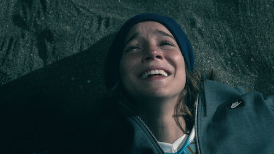
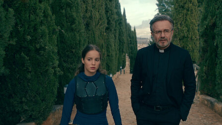
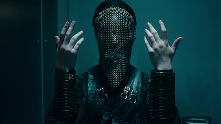
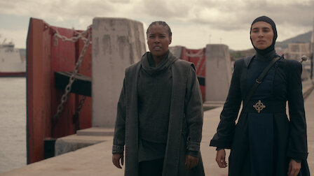
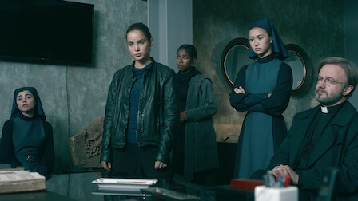

Confused but excited by her newfound abilities, Ava soon realizes she's in over her head, but her need for a helping hand may be a blessing in disguise
After tasting the good life with JC, Ava crashes a swanky tech party with his friends. Mary goes gunning for the people behind the attack on her sisters.

Ava takes her first steps toward understanding the halo's power, but a baptism by fire at the hands of the Order leaves her feeling burned.

4. Ecclesiasticus 26:9-10
45m
As Ava contemplates starting over, she recalls being left to the tender mercies of the orphanage. The Sister Warriors suit up for a dangerous mission.

While Mary squares off with Sister Lilith, Ava begins to open up to JC, and Jillian Salvius fires a warning shot at the Church.
Ava experiences a come-to-Jesus moment courtesy of Mary, who pulls no punches as she shows her just how many souls have their own cross to bear.
Hoping to find some answers, Ava puts her faith in science. Meanwhile, Cardinal Duretti's machinations sow seeds of dissension inside the Order.

Secrets are revealed and a Sister Warrior mysteriously returns to the fold as Ava and her allies attempt to keep a sacred object out of the wrong hands.
9. 2 Corinthians 10:4
37m
Infiltrating the Vatican to find a tomb hidden deep underground for a millennium? Hell, Ava may need a miracle to pull off this mission.
In shock over the contents of the tomb, Ava no longer knows what — or who — to believe as she tries to divine the true history of the halo.